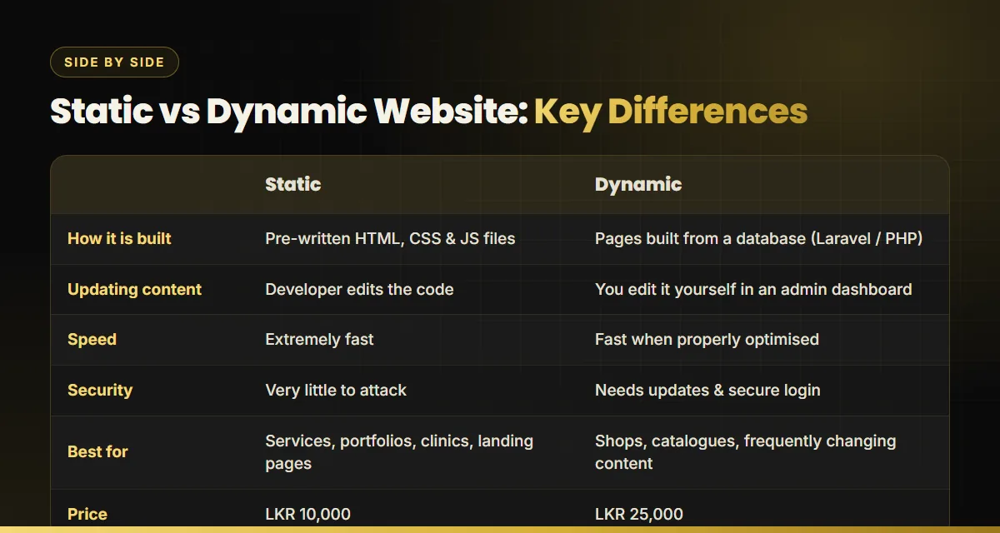

Key takeaways
- A static website is a set of fixed pages. It is very fast, very secure and the most affordable option at LKR 10,000.
- A dynamic website loads content from a database and gives you an admin dashboard to manage products and content yourself, for LKR 25,000.
- Choose static if your content rarely changes. Choose dynamic if you sell products or update content every week.
- Both can rank well on Google. SEO depends on how the site is built, not on which type it is.
When businesses ask us for a website quote, the first thing we work out together is whether they need a static or a dynamic website. The choice affects the price, how fast the site loads, how secure it is and, most importantly, who updates it. Here is a plain-English explanation to help you choose.
What is a static website?
A static website is made of fixed files, mainly HTML, CSS and JavaScript. Every visitor sees exactly the same page, and the server simply sends those ready-made files. There is no database and no login area.
Good for: service businesses, clinics, salons, consultants, construction companies, event pages and portfolios. These are businesses whose core information (services, contact details, gallery) changes only a few times a year.
- Very fast, because pages are ready to send immediately.
- Very secure, because there is no database or admin login to attack.
- Lowest cost to build and host.
- Updates go through your developer, which is fine if changes are rare.
The website you are reading now is a fast static site, and so is the web design Sri Lanka page.
What is a dynamic website?
A dynamic website builds each page from a database at the moment someone visits. Our dynamic sites use Laravel and PHP. You get an admin dashboard where you can log in to add, edit and delete products, prices, photos or posts without touching any code.
Good for: online shops, product catalogues, real estate listings, and any business that adds or changes content every week.
- You manage content yourself through the dashboard.
- Product and inventory management, categories and order handling.
- Room to grow: customer accounts, bookings and payments can be added later.
- Needs more care: secure logins, updates and backups.

Static vs dynamic: side-by-side comparison
| Static website | Dynamic website | |
|---|---|---|
| Built with | HTML, CSS, JavaScript | Laravel, PHP + database |
| Who updates it | Your developer | You, through an admin dashboard |
| Speed | Extremely fast | Fast when properly optimised |
| Security | Very little to attack | Needs secure login and updates |
| Best for | Services, clinics, portfolios | Shops, catalogues, frequent updates |
| Price | LKR 10,000 | LKR 25,000 |
Which is better for SEO?
Neither type is automatically better for SEO. Google ranks pages on relevance, quality and experience, not on whether a database is involved. What matters is how the site is built:
- Speed: static sites have an advantage, but a well-built dynamic site is also fast. See our technical SEO guide for what slows sites down.
- Content: dynamic sites make it easier to publish lots of product or category pages, each of which can rank. That is a big advantage for e-commerce SEO.
- On-page basics: titles, headings, alt text and internal links matter in both. Our on-page SEO guide covers them.
Whichever you choose, use our SEO-friendly website design checklist before launch.
How to choose: 4 quick questions
- Do you sell products online? Yes means dynamic.
- Will you change content more than once a month? Yes means dynamic.
- Do you want to make changes yourself, without a developer? Yes means dynamic.
- Is your main goal enquiries, calls and WhatsApp messages? Static is usually enough.
Many businesses start with a static site and move to dynamic as they grow. When you rebuild, the important thing is to keep your URLs and rankings safe, something we covered in our website migration case study.
Real examples
From our portfolio: a construction company and an aesthetic clinic needed fast, trustworthy service websites with strong enquiry forms, which suits static sites well. A streetwear label and an IT parts shop needed product catalogues they could update themselves, which suits dynamic sites. For full pricing details, see our website cost in Sri Lanka guide.
Not sure which one you need?
Tell us about your business and we will recommend static or dynamic, with a fixed price.

Buddhika S Weerasekara is an SEO consultant and web designer in Sri Lanka who builds fast, search-ready websites for local and international businesses. More about Buddhika.